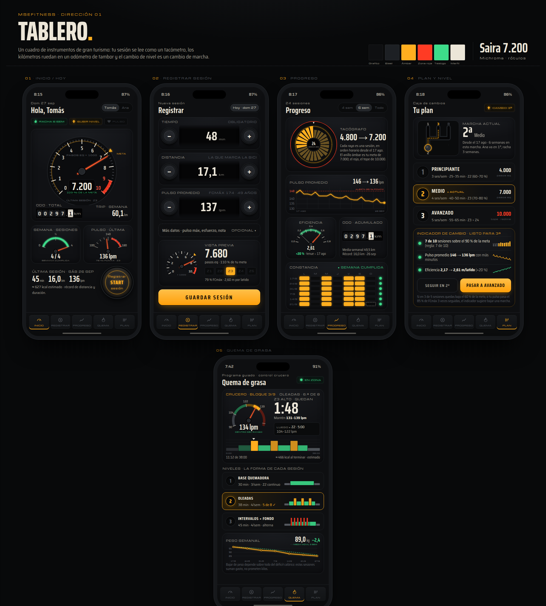
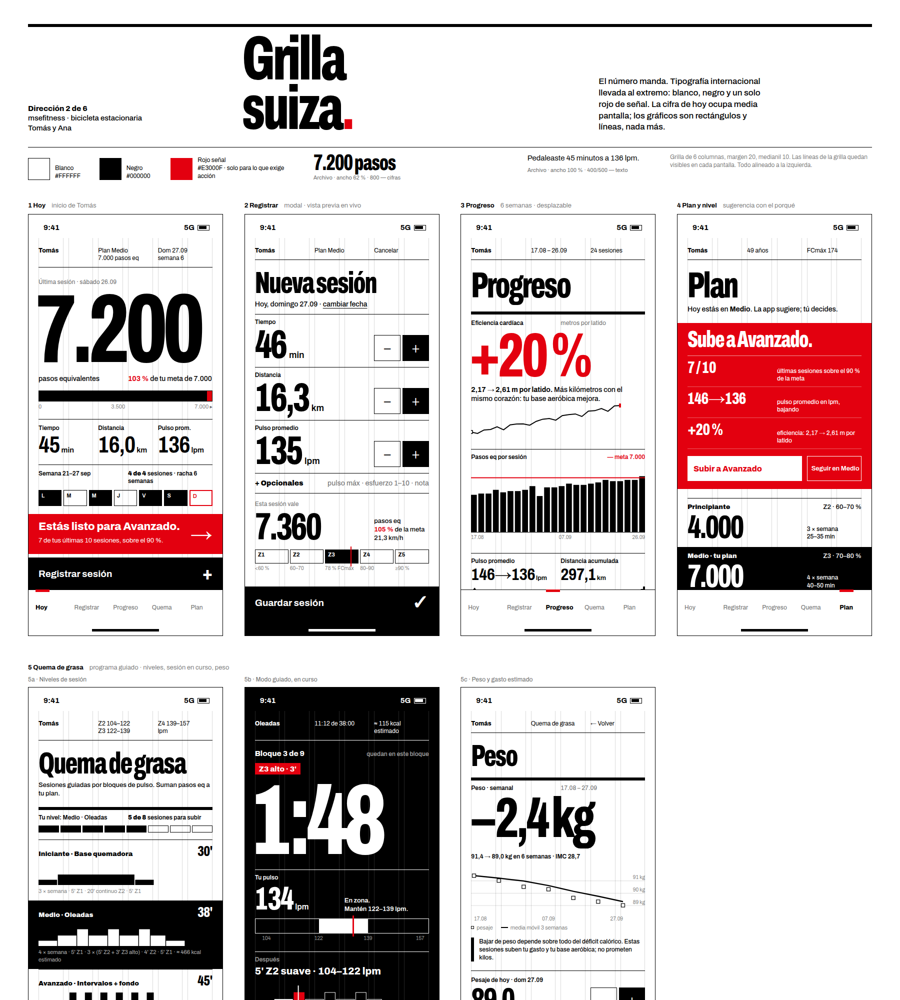
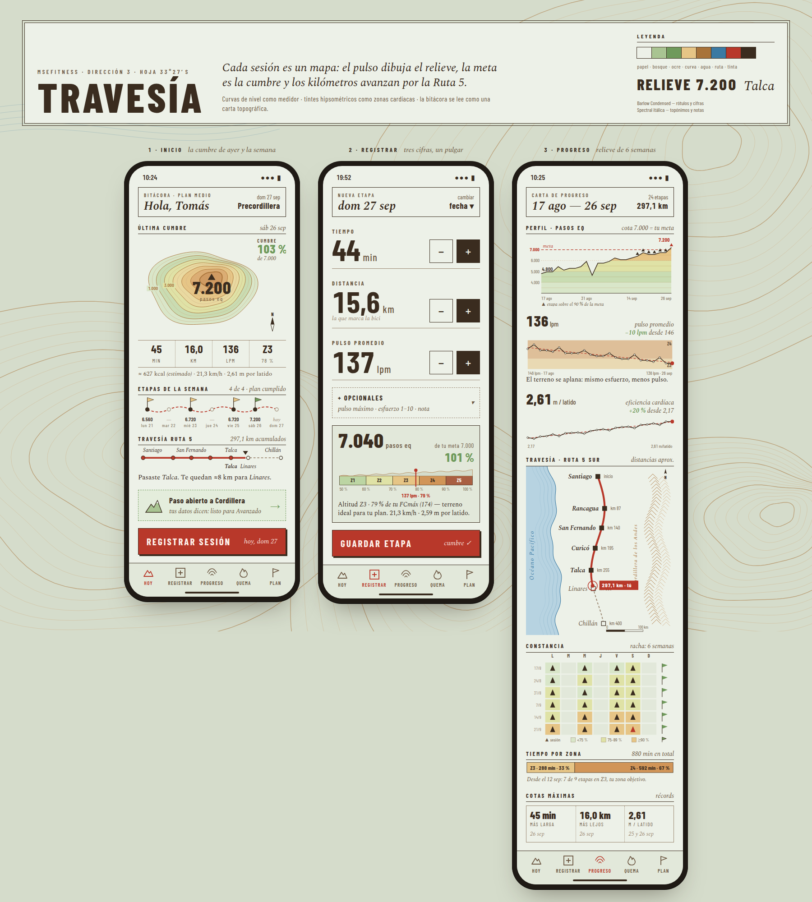
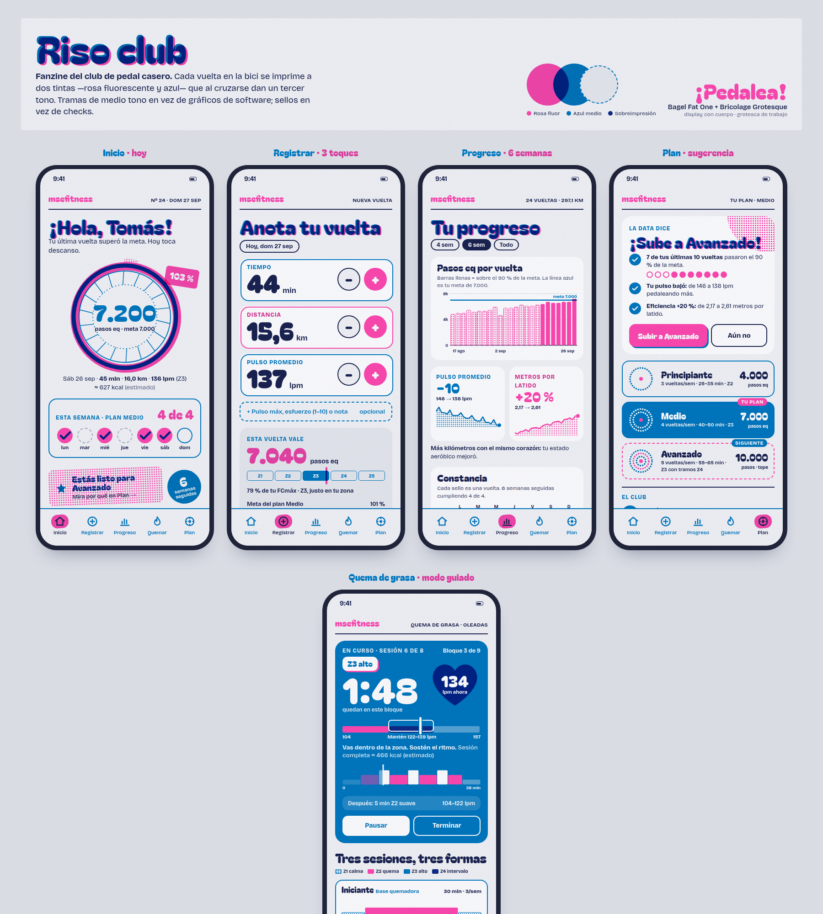
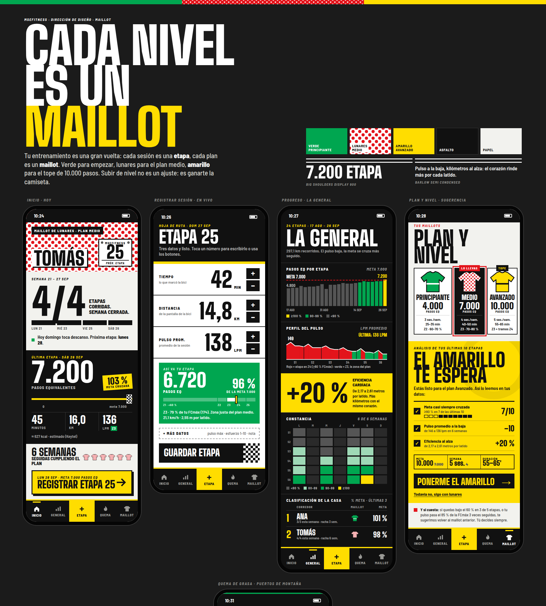
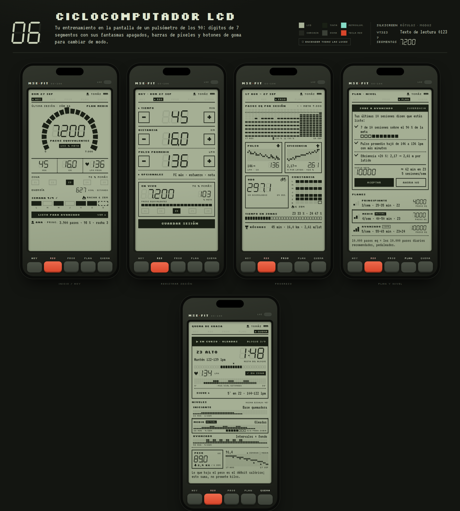

Seis formas de ver el mismo entrenamiento: tus 24 sesiones, el plan Medio, la sugerencia de subir a Avanzado y la quema de grasa guiada. Cada lámina muestra 5 pantallas; ábrela también desde el teléfono para ver la versión a pantalla completa.





